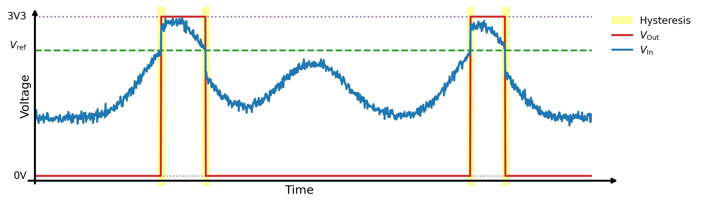
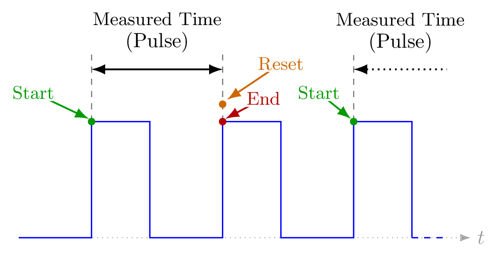
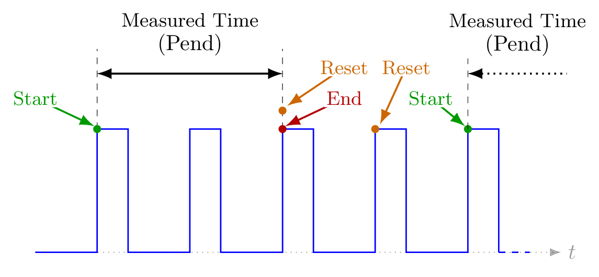
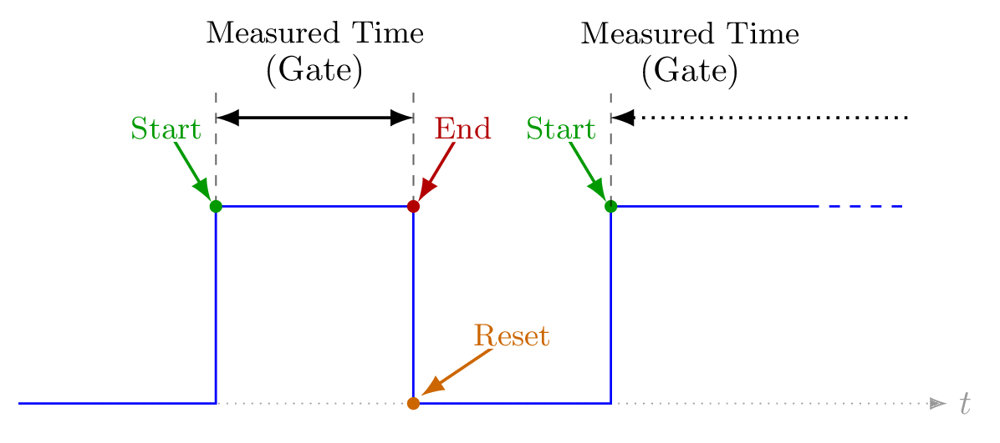
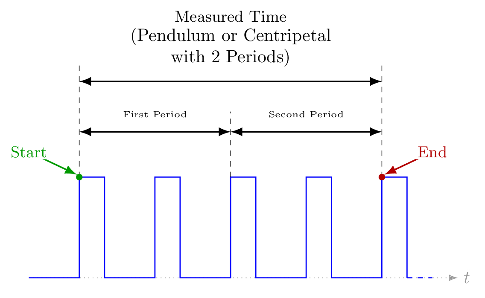
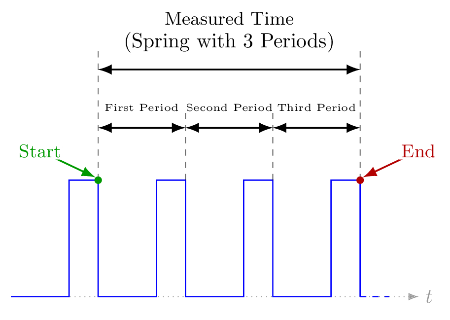
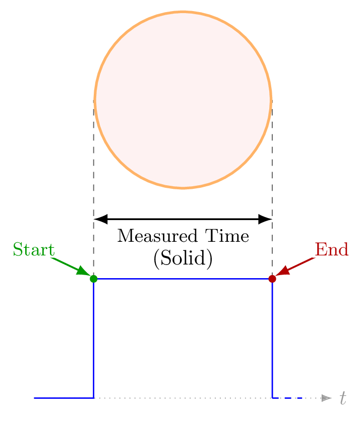
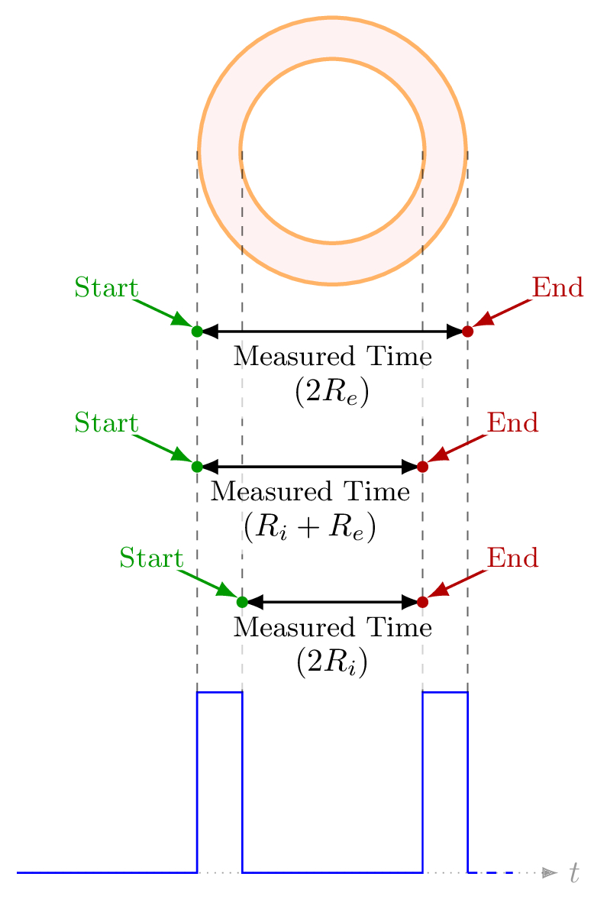
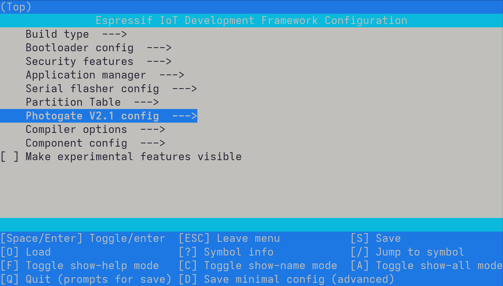
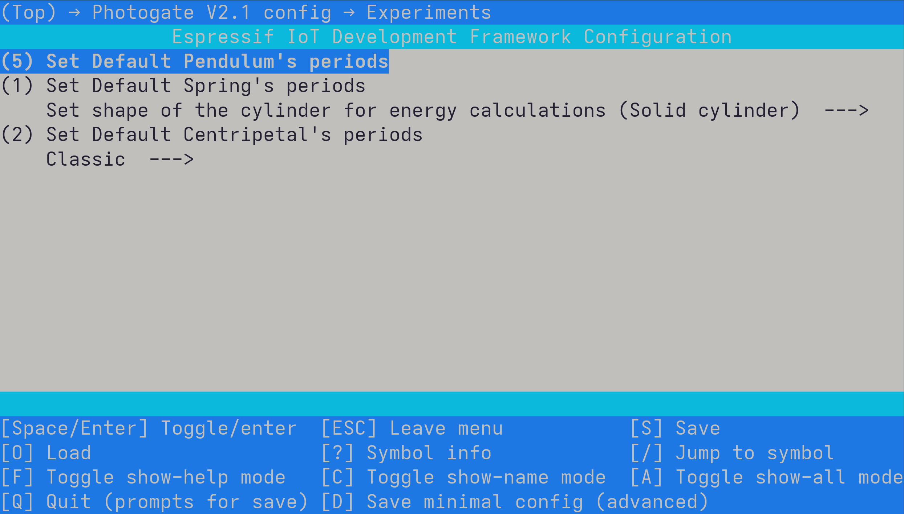

Software and Pulse Measurement
The firmware is built with ESP-IDF and FreeRTOS. It reads digital pulses from the sensor circuit using the ESP32 PCNT pulse counter peripheral, interprets pulse edges in the selected experiment mode, updates the LCD, and stores readings in history while the device is powered.
Measurement Menu
The device starts from a compact menu tree. The user selects a measurement mode, changes configuration values, opens history, or adjusts settings using the rotary encoder.
mindmap
((Root))
((Classic))
Pend
Pulse
Gate
Pendulum
Spring
Mechanical Energy
Centripetal
History
((Settings))
Brightness control
Info
How Pulses Are Read
1. Optical event
The infrared beam is interrupted by the object being measured, changing the photodiode signal.
2. Comparator output
The LM393 compares the sensor signal with the reference threshold and produces a 0V or 3V3 digital pulse.
3. PCNT hardware counting
The ESP32 PCNT peripheral counts rising and falling edges in hardware. A short-pulse filter rejects pulses shorter than the configured noise threshold, reducing false counts without relying on software polling.
4. Experiment state
The selected mode decides which edge starts timing, which edge stops timing, and when the next reading should begin.

Command Flow
Encoder actions are converted into navigation commands, passed through the menu layer, and reflected on the LCD. Experiment routines use the same command path to enter configuration, start waiting for pulses, and return to the menu.
flowchart TB
A(["Rotary encoder input"])
B["encoder.c
decode rotation and button"]
C{{"Navigation command
UP / DOWN / SELECT / BACK"}}
D[("FreeRTOS
command queue")]
E["menus.c
dispatch command"]
F["menu_manager
update menu state"]
G{"Active context"}
H["Menu screen
selection, settings, history"]
I["Experiment routine
config / wait / time / done"]
J["display.c
render output"]
K[["20x4 LCD"]]
A --> B
B --> C
C --> D
D --> E
E --> F
F --> G
G -->|browse menu| H
G -->|measurement selected| I
H --> J
I --> J
J --> K
classDef cmdInput fill:#EAF4FF,stroke:#2563EB,stroke-width:2px,color:#0F172A,rx:12,ry:12;
classDef cmdTransport fill:#FFF7ED,stroke:#EA580C,stroke-width:2px,color:#0F172A,rx:12,ry:12;
classDef cmdMenu fill:#ECFDF5,stroke:#059669,stroke-width:2px,color:#0F172A,rx:12,ry:12;
classDef cmdDecision fill:#FEFCE8,stroke:#CA8A04,stroke-width:2px,color:#0F172A,rx:12,ry:12;
classDef cmdExperiment fill:#F5F3FF,stroke:#7C3AED,stroke-width:2px,color:#0F172A,rx:12,ry:12;
classDef cmdDisplay fill:#FDF2F8,stroke:#DB2777,stroke-width:2px,color:#0F172A,rx:12,ry:12;
class A,B cmdInput;
class C,D cmdTransport;
class E,F cmdMenu;
class G cmdDecision;
class I cmdExperiment;
class H,J,K cmdDisplay;
Experiment State Machine
States
- Config: the user chooses parameters such as memory, periods, or mechanical interval.
- Waiting: the device waits for the edge that starts the measurement.
- Timing: the timer runs while the LCD shows the active measurement.
- Done: the measured result is shown and can be saved to history.
Encoder Commands
NAVIGATE_UPandNAVIGATE_DOWNmove through values and menu entries.NAVIGATE_SELECTenters menus, confirms values, or returns to configuration while a mode is running.NAVIGATE_BACKreturns to the previous menu or exits the current function.
Pulse Timing Diagrams
These diagrams are kept in their own section because they describe how each experiment interprets pulse edges.
Classic Modes



Period-Based Experiments


Mechanical Energy


Configuration
Project options are exposed through ESP-IDF menuconfig, so pins, filters, encoder behavior, display settings, and experiment defaults can be adjusted without editing source files directly.

